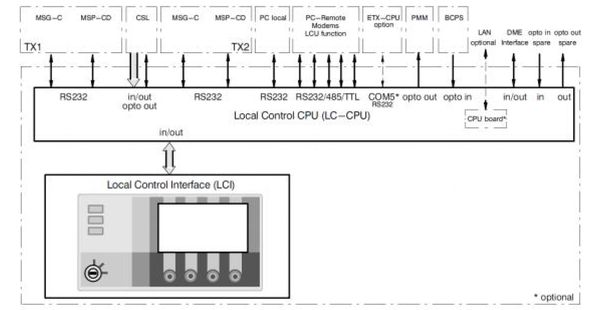

Aviation Parts
Authorized aviation parts and navigation system components, including Local Control Panels.

Local Control Panel (LCP)
Authorized aviation Local Control Panel (LCP) featuring updated LC-CPU board (Ref. 83135 21004). Backward compatible with Ref. 83135 21002 and 83135 21003.
- Updated LC-CPU Board: Equipped with the advanced CPU board for reliable performance.
- Backward Compatible: Fully compatible with Ref. 83135 21002 and 83135 21003.
- Comprehensive Interfaces: Supports RS232, RS232/485/TTL, and optional LAN/opt in/opt out.
- Modular Design: Consists of separate LC-CPU and Local Control Interface (LCI) boards for easy maintenance.
Download Datasheet (PDF)